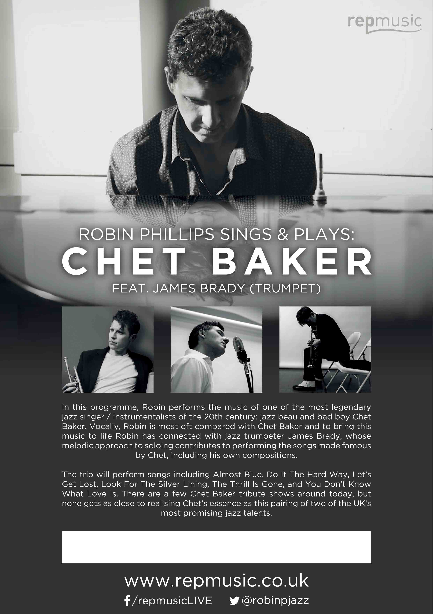
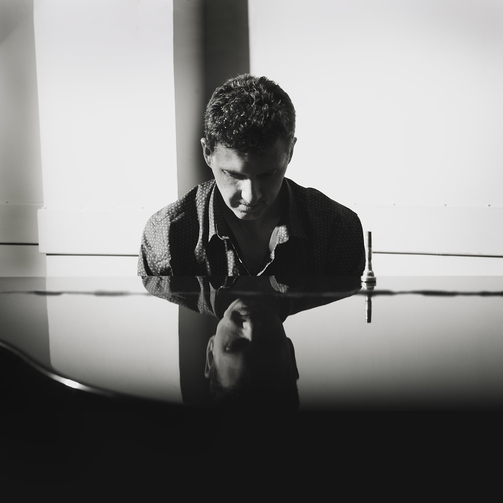
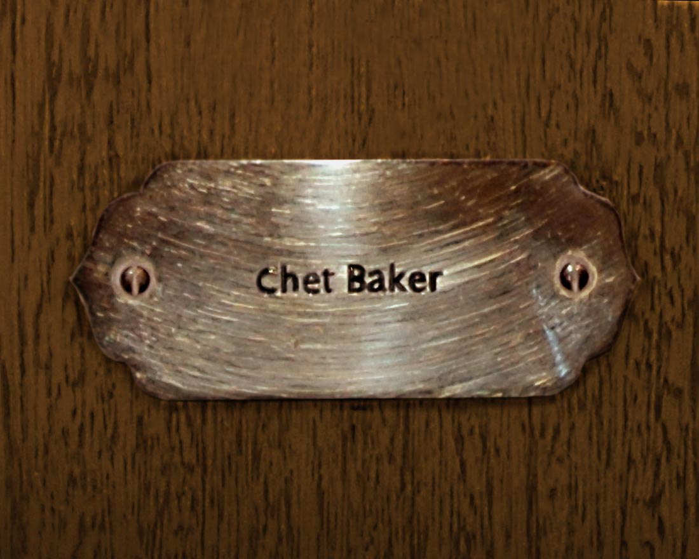

2-3 & 10-11 Sept
Amsterdam
City of late years and last nights. The film opens the European leg here, then returns before the flight home.

A documentary in production · 2026
Were Chet Baker’s European years a waste, or the real body of the work?
Photograph: Chet Baker, 1955. Public domain (U.S., copyright not renewed). Wikimedia Commons.
The film
Bruce Weber’s Let’s Get Lost fixed Chet Baker in American myth: the beautiful West Coast cool, then the long fall. It remains the film most people mean when they say “the Chet Baker documentary.”
Chasing Chet starts where that story thins out. For decades Baker lived, recorded, and played across Europe. Amsterdam, Paris, Milan, Rome, Brussels, Liège. Rooms that still remember him. Musicians still alive who sat beside him on bandstands and in studios when the American press had already written the ending.
This film asks a plain question. Was that stretch of his life only addiction and exile, or did he make lasting music there? We travel the route with a small crew, a trumpet, and the people who can still answer from first hand.
The access will not last. Many of the interviewees are in their eighties and nineties. The film is being made now for that reason alone.

“He sang a gorgeous version of The Thrill Is Gone, which captured the lyricism and melancholy of the original… A spellbinding performance that brought the house down.”

The counterpart
Written and directed by Bruce Weber. Music by Chet Baker. Shot by Jeff Preiss. About two hours of black and white improvisation around a man already halfway into legend.
Weber follows Baker near the end: Santa Monica light, Cannes nights, old associates, lovers, children, and the face that still held the 1950s inside a harder present. The film was nominated for an Academy Award for Best Documentary Feature. Restored prints still play in cinemas that care about jazz and about how star quality is made.
Chasing Chet is not a remake and not a correction of Weber’s film. It is the other half of the map: Europe, the collaborators still here, and the albums that argue the years were not empty.
Poster used for reference only. © Little Bear Films / rights holders. Not affiliated with this production.
Trailer for Bruce Weber’s Let’s Get Lost. External video. Rights remain with the film’s owners.
September 2026
London pre-shoots through the summer. Then a continuous European run: Amsterdam, Paris, Milan, Lucca, Florence, Rome, Brussels, Bilzen, Liège, and back.
Hotels Chet used. Rooms where sessions happened. Houses that still hold instruments and stories. The route is the argument of the film in physical form.
City of late years and last nights. The film opens the European leg here, then returns before the flight home.

Interview with pianist Kirk Lightsey. A city Baker returned to when work and friendship still held.

Train into Italy, then road south. Landscape B-roll and the Italian stretch of the story.

Nicola Stilo and Giovanni Tommaso. Collaborators who can speak to Baker’s Italian years from the stand.

Philip Catherine and Wim Wigt. Then engineer Max Bolleman near Bilzen, where so many late records were made real.

An overnight at Jacques Pelzer’s place. A house that still belongs to the European jazz story.
On camera
The film is built from people, not archive alone. London interviews first. Europe in September. A few names held for later trips.
Director · pianist · singer
On camera for the pre-trip interview and the Top 30 albums day. The film grows out of years of performing Baker’s music with James Brady.
Biographer · London
Author of the Chet Baker biography Funny Valentine. Context for the life, the catalogue, and the European chapters.
Addiction expert · London
A clear-eyed voice on the drug years without reducing the music to a case study.
Bassist · London
A working musician’s view of Baker’s language on the bandstand.
Piano · Paris
A major collaborator from the later years. Paris, early September.
Flute & guitar · Rome
Played with Baker in Italy. Appears in the late-period music that Weber also drew on.
Bass · Rome
Italian sessions and the daily work of keeping a rhythm section honest.
Guitar · Brussels
One of Europe’s essential guitar voices, with direct history beside Baker.
Promoter & producer · Brussels
Timeless Records and the late European infrastructure around Baker’s working life.
Recording engineer · near Bilzen
The man who captured so many of the European masters on tape.
Music & performance
Robin Phillips has spent years singing and playing Baker’s book with trumpeter James Brady. That live work is the root of this film, not a side note.
In production, Brady travels with the crew. Original performance on the road is both a way into the music and a practical path when master recordings cannot yet be cleared for every screen.
A separate shoot, the Top 30 albums day, builds a companion series that can live on video while the feature is cut. Weekly chapters. The same question. Different doors into the catalogue.





Robin Phillips Sings & Plays: Chet Baker, featuring James Brady. From the repmusic YouTube channel.

Approach
A three-person core crew. Principal camera and sound with Elaine Mingay. Secondary camera and location B-roll with Seb Fisher. Robin producing and directing while the journey moves.
Interviews in rooms as we find them. Minimum viable capture for the moments that will not wait: one camera rolling, clean sound on the speaker, no delay for lights if the story is leaving the room.
Controlled setups get full attention. 4K, 25 frames, logs where they help the grade. Stills of each contributor for later press. A written rule about what may go online before the feature is locked.
Production
Working title Chasing Chet. Produced under repmusic. Status: in production, 2026.
London pre-shoots July-August 2026. European principal photography 2-11 September 2026. Further interviews planned when diaries allow.
For press, screening interest, or contributor notes, write to the production.
This page is a production site, not a finished film page. No trailer for Chasing Chet has been released yet.
robin@repmusic.co.uk